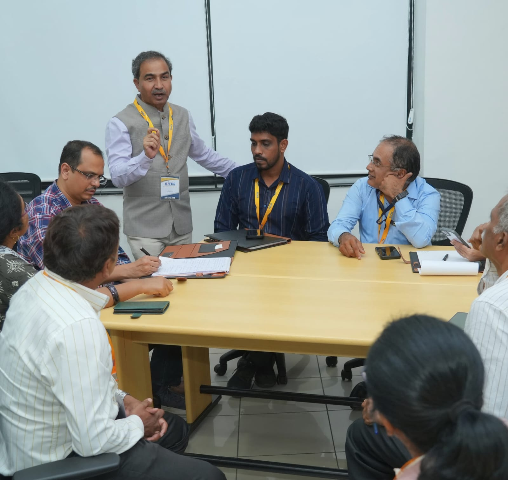
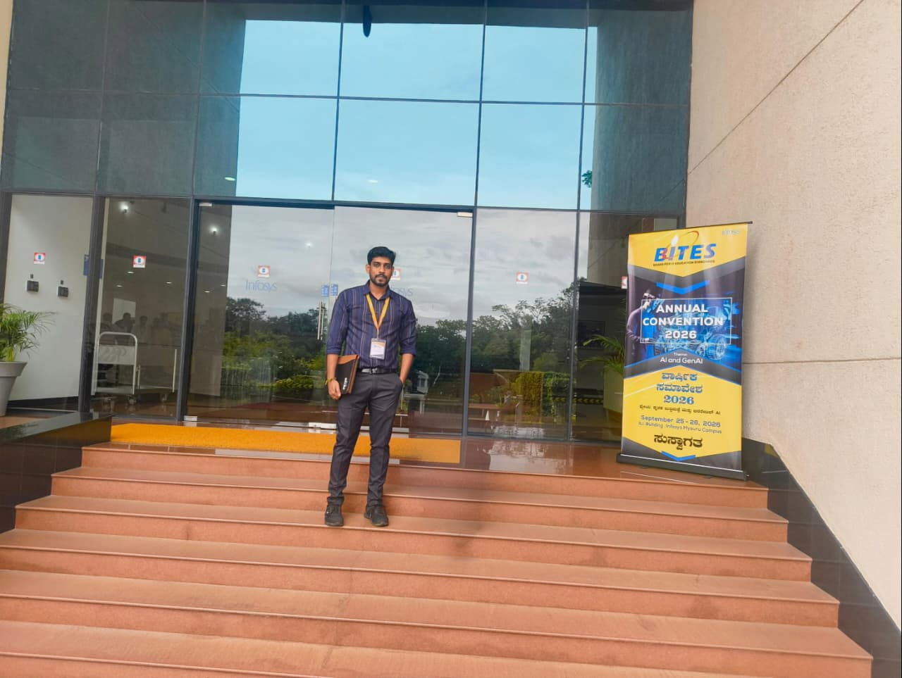

01
DevOps
Continuous integration, continuous deployment, automation, and delivery workflows.
Hello, I'm Manikanta Prasad J — an Assistant Professor with interests in cloud computing, DevOps, computer networks, and artificial intelligence.
I believe meaningful education connects strong fundamentals with practical exploration. My interests span modern infrastructure, intelligent systems, and secure computing.
Focused on creating an engaging learning environment and encouraging students to explore emerging technologies through hands-on sessions, projects, and research.

Core areas of interest and research, as listed in my academic résumé.
Continuous integration, continuous deployment, automation, and delivery workflows.
Cloud services, AWS cloud computing, monitoring, and auto-scaling concepts.
Network concepts, distributed systems, and wireless sensor network research.
Machine learning applications, data analytics, image processing, and security research.
Selected publication and conference topics transcribed from the supplied résumé. Publication status is preserved where specified.
Manuscript listed as under review in the International Research Journal of Engineering and Technology (IRJET).
Manuscript listed in the supplied résumé under IRJET publication details.
Listed under the Second IEEE International Conference on Advances in Information Technology (ICAIT 2024).
Research topic listed under ICAIT 2024.
Listed in the résumé under a conference on communication, automation, management, and security.
Project exploring detection of network cuts caused by node failures, demonstrated through simulation and hardware implementation.
Invited talks and hands-on learning sessions documented in the résumé.
Expert talk for final-year students at Navkis College of Engineering, Hassan.
Resource person for a one-day workshop at Smt. L.V. (Government) Polytechnic College, Hassan.
Resource person for a hands-on session for sixth-semester students at Rajeev Institute of Technology, Hassan.

Qualifications and teaching appointment as provided in the résumé.
Adichunchanagiri Institute of Technology, Chikkamagaluru
Rajeev Institute of Technology, Hassan · Visvesvaraya Technological University
Adichunchanagiri Institute of Technology, Chikkamagaluru · Visvesvaraya Technological University
Registered under Visvesvaraya Technological University (VTU) · Ongoing
Information Science and Engineering · Adichunchanagiri Institute of Technology, Chikkamagaluru
For academic discussions, workshops, research collaboration, or technology sessions, feel free to reach out.